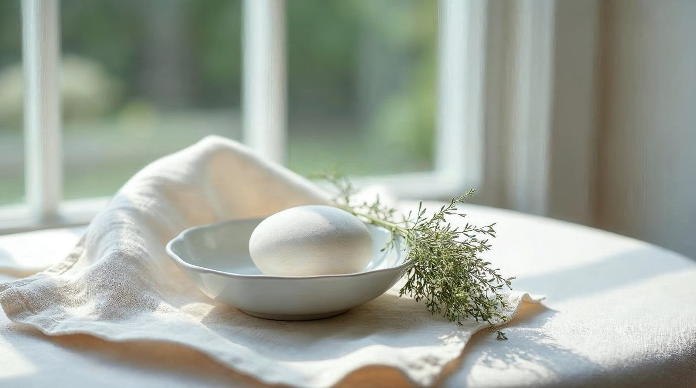
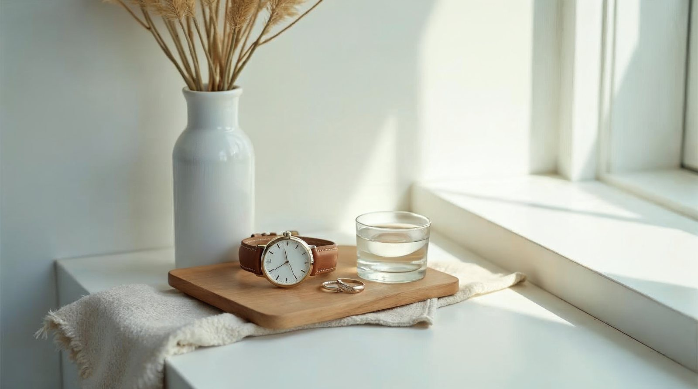
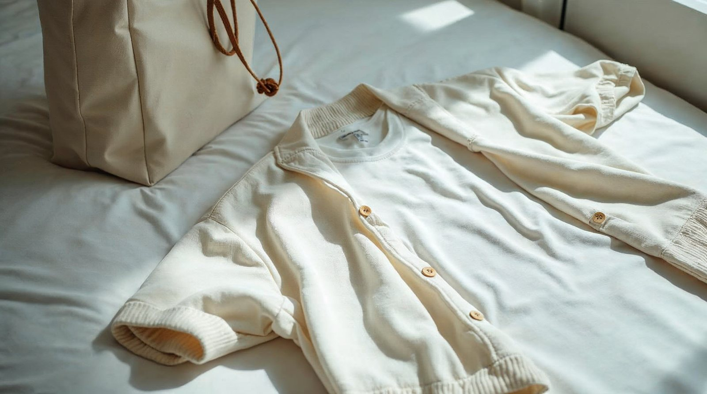
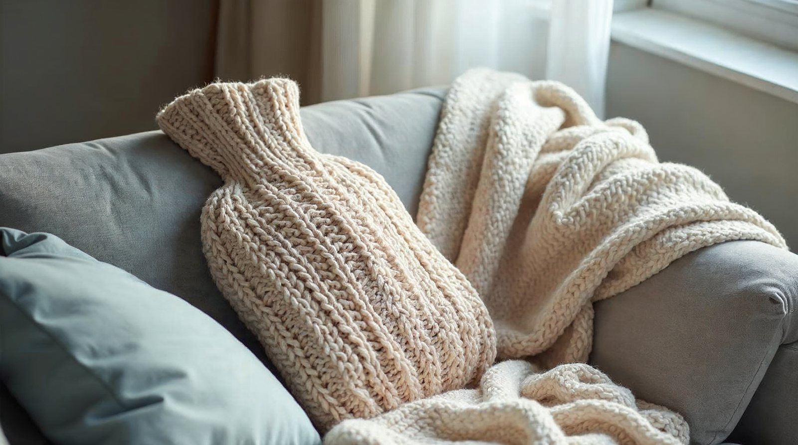

이종호 한의사 감수좋은꿈참사랑한의원 대표원장 (한의사 면허번호 19769)발행 2026-11-26 · 수정 2026-11-26
이 글의 차례
엑스레이 사진을 보던 의사가 어깨 위쪽의 하얀 덩어리를 가리키며 "힘줄에 석회가 있네요"라고 말합니다. 뼈도 아닌 곳에 돌 같은 것이 있다니, 진료실을 나서는 내내 그 하얀 점이 머릿속을 떠나지 않습니다. 그날 밤 옆으로 누우려다 어깨가 욱신해서 다시 바로 눕게 됩니다.
어깨 석회성 건염은 어깨를 감싸는 힘줄 안에 칼슘 성분이 쌓여 생기는 통증입니다. 석회가 있다고 모두 아픈 것은 아니고, 석회가 생기고 흡수되는 시기에 따라 통증의 얼굴이 많이 다릅니다. 저는 그래서 사진 속 석회보다 지금 어깨가 어떤 시기에 있는지를 먼저 봅니다.
체외충격파는 석회성 건염에서 오래 연구되어 온 방법 가운데 하나로 알려져 있습니다. 다만 석회의 크기와 단단함, 통증의 시기에 따라 맞는 때와 기다려야 할 때가 있습니다. 어느 날 갑자기 팔을 전혀 들 수 없을 만큼 아프고 밤새 잠을 못 이루셨다면, 이 글보다 정형외과 진료가 먼저입니다.
진료실에서 이런 말씀을 자주 듣습니다. "석회를 깨야 한다는데, 그럼 깨질 때까지 계속 맞아야 하나요?" 또 어떤 분은 "석회가 있다는 말만 듣고 무서워서 팔을 아예 안 쓰고 있었어요" 하십니다. 두 마음 모두 충분히 이해가 됩니다.
하얀 점 하나에 마음이 온통 쏠리는 것은 자연스러운 일입니다. 그래도 그 점이 어깨의 전부는 아닙니다. 오늘은 석회가 왜 생기는지, 체외충격파는 무엇을 할 수 있고 무엇은 어려운지, 받기 전에 무엇을 알려 주시면 좋은지를 차근차근 풀어 보겠습니다.
왜 어깨 힘줄에 석회가 생길까요
어깨에는 팔을 들어 올리고 돌리는 작은 힘줄 네 개가 모자처럼 뼈를 감싸고 있습니다. 흔히 회전근개라고 부르는 힘줄들입니다. 석회는 이 가운데 어깨 위쪽을 지나는 힘줄에 가장 흔히 생기는 것으로 알려져 있습니다.
왜 하필 그 자리에 칼슘이 쌓이는지는 아직 다 밝혀지지 않았습니다. 힘줄로 가는 혈액 흐름이 넉넉하지 않은 자리라는 점, 힘줄 세포의 성질이 바뀌면서 칼슘이 침착된다는 설명이 주로 이야기됩니다. 무거운 일을 해서만 생기는 것도 아니고, 사무직에게도 흔히 보입니다.
흥미로운 것은 석회가 생겼다가 저절로 흡수되기도 한다는 점입니다. 석회가 단단하게 자리 잡고 있을 때는 오히려 큰 통증이 없거나 은근하게 불편한 정도로 지내는 분이 많습니다. 그러다 석회가 녹아 흡수되는 시기에 주변에 염증 반응이 생기면서 갑자기 심하게 아플 수 있다고 알려져 있습니다.
그래서 석회성 건염은 시기마다 다르게 봐야 합니다. 몇 달째 팔을 들 때 걸리는 느낌이 있는 어깨와, 이틀 전부터 갑자기 팔을 들 수 없을 만큼 아픈 어깨는 같은 석회라도 접근이 달라집니다.
한의학에서는 어깨가 아파 팔을 들기 어려운 것을 견비통(肩臂痛)이라 부르며 오래 살펴 왔습니다. 저는 사진 속 석회와 함께, 그 어깨가 버텨 온 하루의 모양을 같이 보려고 합니다.
석회성 건염, 오십견, 힘줄 손상은 어떻게 다를까요
어깨가 아프면 다들 "오십견인가요?" 하고 먼저 물으십니다. 오십견은 어깨 관절을 감싼 주머니가 두꺼워지고 굳어서, 남이 들어 주어도 팔이 잘 올라가지 않는 것이 특징입니다. 석회성 건염은 아파서 못 드는 것이지, 천천히 도와주면 어느 정도 올라가는 경우가 많습니다.
힘줄이 찢어진 경우는 또 다릅니다. 넘어지거나 무거운 것을 들다가 '뚝' 하는 느낌 뒤로 팔에 힘이 빠지고, 들어 올린 팔을 버티기 어렵다면 힘줄 손상을 먼저 확인해야 합니다. 이런 구분은 손으로 움직여 보는 진찰과 영상 검사가 함께 있어야 또렷해집니다.
목에서 내려오는 통증도 어깨 통증처럼 느껴질 수 있습니다. 팔을 따라 손가락까지 저림이 내려오거나, 고개를 돌릴 때 어깨 통증이 같이 변한다면 목도 함께 살펴야 합니다. 그래서 저는 어깨만 보지 않고 목을 돌려 보고 팔의 감각도 확인합니다.

체외충격파는 석회성 건염에서 어떻게 쓰나요
체외충격파는 피부를 절개하지 않고, 장비 끝을 아픈 부위에 대고 짧은 압력파를 반복해서 전달하는 방법입니다. 석회성 건염은 체외충격파가 오래 연구되어 온 대표적인 부위 가운데 하나로 알려져 있습니다.
다만 연구 결과는 석회의 크기와 단단함, 통증 시기, 장비와 강도에 따라 달라서, 모든 어깨에 같은 결과를 기대하기는 어렵습니다. 석회를 '깨서 없앤다'고만 생각하시면 실망이 클 수 있습니다. 저는 석회의 모양보다 팔을 들 때와 밤에 누울 때의 불편이 어떻게 변하는지를 함께 보자고 말씀드립니다.
갑자기 극심하게 아픈 시기에는 체외충격파를 서두르지 않습니다. 이때는 어깨가 이미 뜨겁게 반응하고 있는 때라, 먼저 정형외과에서 상태를 확인하고 통증을 가라앉히는 쪽이 우선일 수 있습니다. 은근한 통증이 몇 달씩 이어지는 시기라면 체외충격파를 검토해 볼 수 있습니다.
받는 동안에는 두드리는 느낌, 시큰한 느낌, 평소 아프던 자리가 더 또렷하게 느껴지는 느낌이 들 수 있습니다. 그 반응이 위치를 찾는 단서가 되기도 합니다. 참기 어려우면 그 자리에서 바로 말씀해 주세요. 강도를 낮추거나 자리를 조금 옮깁니다.
몇 번, 어떤 간격으로 할지는 진찰 뒤 함께 정합니다. 보통은 한 번에 몰아서 많이 하기보다 간격을 두고 어깨의 반응을 보며 이어 갑니다. 받은 뒤 하루 이틀 뻐근함이나 시큰함이 남을 수 있어, 다음에 오시면 그 이야기부터 여쭙니다.
체외충격파가 할 수 있는 것과 어려운 것
체외충격파는 아픈 힘줄 주변에 자극을 주어 몸이 그 자리를 다시 돌보도록 돕는 방법으로 설명됩니다. 통증을 느끼는 신경의 예민함을 누그러뜨리는 쪽으로도 연구되어 왔습니다. 그래서 오래 은근하게 아픈 어깨에서 주로 검토합니다.
반대로 체외충격파가 대신하기 어려운 것도 분명히 있습니다. 찢어진 힘줄을 이어 붙이지 못하고, 굳어 버린 관절 주머니를 혼자 풀어 주기도 어렵습니다. 어깨를 쓰는 습관이 그대로라면 같은 자리가 다시 예민해질 수 있습니다.
그래서 저는 체외충격파를 받는 동안에도 일하는 자세와 팔 쓰는 높이, 잠자는 자세를 같이 이야기합니다. 기계가 하는 일과 생활에서 하는 일이 함께 가야 어깨가 덜 힘들어집니다. 몇 번 받았는지보다 하루가 어떻게 달라졌는지를 함께 보자고 말씀드리는 이유입니다.

받기 전에 꼭 알려 주세요
체외충격파 전에 아래 내용은 미리 말씀해 주셔야 합니다. 해당하는지 헷갈리셔도 괜찮습니다. 일단 말씀해 주시면 같이 확인합니다.
- 혈액을 묽게 하는 약(항응고제·항혈소판제)을 드시는 경우
- 임신 중이거나 임신 가능성이 있는 경우
- 어깨 주변에 금속 고정물이나 인공관절이 있거나, 심장박동기 같은 전자 의료기기가 있는 경우
- 치료할 자리의 피부에 상처, 염증, 피부병이 있는 경우
- 최근 같은 어깨에 스테로이드 주사를 맞은 경우
주사를 맞은 지 얼마 안 되었다면 날짜를 알려 주세요. 주사 뒤 힘줄 상태와 통증 변화를 보면서 체외충격파를 언제 할지 신중하게 정합니다. 드시는 약은 처방한 의사와 상의 없이 줄이거나 끊지 않습니다.
먼저 이렇게 여쭙니다
- 언제부터 아팠고, 처음에 갑자기 시작됐나요, 서서히 시작됐나요?
- 팔을 어느 방향으로 들 때, 어느 높이에서 가장 아픈가요?
- 밤에 아픈 쪽으로 누우면 깨시나요? 몇 번쯤 깨시나요?
- 엑스레이나 초음파에서 석회 크기나 위치를 들으신 적이 있나요?
- 지금까지 받은 주사, 약, 물리치료는 무엇이고 언제였나요?
- 팔이나 손가락 저림, 힘 빠짐은 없나요?
처음부터 다 기억하지 못하셔도 괜찮습니다. 생각나는 것부터 말씀해 주시면 나머지는 제가 하나씩 여쭙겠습니다. 다른 병원에서 찍은 사진이나 결과지가 있으면 가져와 주세요.

체외충격파를 받는 날은 이렇게 흘러갑니다
오시면 먼저 지난번 이후 어깨가 어땠는지, 밤에는 어땠는지를 여쭙니다. 그다음 팔을 앞으로, 옆으로, 뒤로 돌려 보며 아픈 각도를 다시 확인합니다. 지난번과 같은 동작으로 비교해야 변화를 읽을 수 있기 때문입니다.
어깨를 드러내야 하니 단추가 앞에 있는 옷이나 소매가 넉넉한 옷이 편합니다. 앉거나 누운 자세에서 팔의 위치를 조금씩 바꿔 가며, 석회가 있는 자리와 가장 예민한 지점을 손으로 짚어 표시합니다. 필요하면 초음파로 석회와 힘줄을 다시 봅니다.
장비를 대면 처음에는 낮은 강도로 시작합니다. 받는 중에 "지금 몇 점쯤 불편하세요?" 하고 여러 번 여쭙습니다. 그 답에 따라 강도를 올리거나 내립니다. 받은 자리와 강도, 받은 뒤 느낌은 기록해 두고 다음 진료에서 비교합니다.
일상에서 먼저 해 볼 수 있는 것
- 아픈 쪽으로 눕지 말고, 바로 누울 때 아픈 팔 밑에 얇은 베개를 받쳐 팔꿈치가 몸보다 살짝 높게 두기
- 머리 위 선반의 물건은 낮은 곳으로 옮겨 팔을 높이 드는 횟수 줄이기
- 아프지 않은 범위에서 팔을 시계추처럼 가볍게 흔들어 어깨가 굳지 않게 하기
- 무거운 장바구니나 가방은 아프지 않은 쪽, 또는 양손에 나눠 들기
석회가 있다는 말에 팔을 아예 안 쓰시는 분이 있습니다. 하지만 너무 오래 쓰지 않으면 어깨가 굳어 다른 문제로 이어질 수 있습니다. 아프지 않은 범위에서 조금씩 움직이는 것과, 아픈 동작을 억지로 반복하는 것은 다릅니다.
체외충격파를 받은 날은 어깨를 세게 주무르거나 무거운 운동을 하지 않으시길 권합니다. 따뜻한 샤워 정도는 괜찮지만, 받은 자리가 평소와 다르게 붓거나 멍이 오래가면 전화로 알려 주세요.

한의원에서 함께 살필 수 있는 경우
- 석회가 있다는 말을 들었고, 은근한 통증이 몇 주에서 몇 달째 이어지는 경우
- 밤에 아픈 쪽으로 누우면 깨는 날이 잦은 경우
- 팔을 특정 높이로 들 때마다 걸리고 시큰한 경우
- 어깨가 아프면서 목과 등까지 함께 굳어 있는 경우
좋은꿈참사랑한의원에서는 문진과 맥으로 몸 전체를 먼저 보고, 어깨를 여러 방향으로 움직여 아픈 각도를 찾습니다. 필요하다고 판단되면 초음파로 석회와 힘줄을 확인하고, 체외충격파가 맞는다고 판단될 때 원내 장비(제우스·한일티엠) 가운데 부위에 맞는 것을 골라 원장이 직접 낮은 강도부터 시작합니다.
어깨 주변이 굳어 있으면 침이나 약침, 추나를 이어서 쓰기도 합니다. 체외충격파를 할지, 몇 번 어떤 간격으로 할지, 비용은 어떤지는 진찰 뒤 이유와 함께 설명해 드립니다. 미리 궁금하시면 방문 전 전화로 확인해 주세요.
이렇게 기록해 오시면 상담이 쉬워집니다
- 밤에 깬 횟수와 그때 누워 있던 방향
- 팔을 들 때 아픈 높이(어깨 높이, 귀 높이 등)와 방향
- 통증이 심해진 날 그날 한 일
- 체외충격파를 받은 뒤 하루, 사흘째의 느낌
거울 앞에서 양팔을 천천히 앞으로, 옆으로 들어 보고 어디서 멈추는지 휴대폰으로 짧게 찍어 두셔도 좋습니다. 다음 진료 때 같은 동작과 비교하기가 훨씬 쉬워집니다.
이런 증상은 먼저 확인이 필요합니다
- 하루 이틀 사이에 갑자기 팔을 전혀 들 수 없을 만큼 극심하게 아픈 경우
- 넘어지거나 부딪힌 뒤 어깨가 붓고 팔에 힘이 들어가지 않는 경우
이런 신호가 있으면 한의원보다 가까운 병원이나 응급실을 먼저 찾으세요.
석회가 있다는 말은 무겁게 들리지만, 어깨를 오래 써 온 시간이 남긴 흔적이기도 합니다. 서두르지 않고 지금 어깨가 어느 시기에 있는지부터 같이 보겠습니다. 다음에 오시면 지난 일주일 동안 밤에 몇 번 깨셨는지부터 여쭙겠습니다.
함께 읽으면 좋은 글
- 어깨가 아플 때 초음파로 무엇을 확인하고, 어떤 동작을 먼저 묻나요?
- 오십견이 의심될 때 어깨가 어느 방향으로 안 올라가는지 먼저 살펴보려면 어떻게 하나요?
- 체외충격파를 처음 받기 전에 알아 두면 좋은 것은요?
- 체외충격파를 받은 날은 어떻게 지내면 되나요?
여쭙는 것
- 언제부터 아팠고, 처음에 갑자기 시작됐나요, 서서히 시작됐나요?
- 팔을 어느 방향으로 들 때, 어느 높이에서 가장 아픈가요?
- 밤에 아픈 쪽으로 누우면 깨시나요? 몇 번쯤 깨시나요?
생활에서 해 볼 것
- 아픈 쪽으로 눕지 말고, 바로 누울 때 아픈 팔 밑에 얇은 베개를 받쳐 팔꿈치가 몸…
- 머리 위 선반의 물건은 낮은 곳으로 옮겨 팔을 높이 드는 횟수 줄이기
- 아프지 않은 범위에서 팔을 시계추처럼 가볍게 흔들어 어깨가 굳지 않게 하기
한의원에서 함께 살필 것
- 석회가 있다는 말을 들었고, 은근한 통증이 몇 주에서 몇 달째 이어지는 경우
- 밤에 아픈 쪽으로 누우면 깨는 날이 잦은 경우
- 팔을 특정 높이로 들 때마다 걸리고 시큰한 경우
먼저 확인이 필요한 신호
- 하루 이틀 사이에 갑자기 팔을 전혀 들 수 없을 만큼 극심하게 아픈 경우
- 넘어지거나 부딪힌 뒤 어깨가 붓고 팔에 힘이 들어가지 않는 경우
한눈에 보는 표
| 구분 | 핵심 |
|---|---|
| 여쭙는 것 | 언제부터 아팠고, 처음에 갑자기 시작됐나요, 서서히 시작됐나요? 팔을 어느 방향으로 들 때, 어느 높이에서 가장 아픈가요? |
| 생활에서 해 볼 것 | 아픈 쪽으로 눕지 말고, 바로 누울 때 아픈 팔 밑에 얇은 베개를 받쳐 팔꿈치가 몸보다 살짝 높게 두기 머리 위 선반의 물건은 낮은 곳으로 옮겨 팔을 높이 드는 횟수 줄이기 |
| 한의원에서 함께 살필 것 | 석회가 있다는 말을 들었고, 은근한 통증이 몇 주에서 몇 달째 이어지는 경우 밤에 아픈 쪽으로 누우면 깨는 날이 잦은 경우 |
| 먼저 확인이 필요한 신호 | 하루 이틀 사이에 갑자기 팔을 전혀 들 수 없을 만큼 극심하게 아픈 경우 넘어지거나 부딪힌 뒤 어깨가 붓고 팔에 힘이 들어가지 않는 경우 |
자주 묻는 질문
석회가 있으면 꼭 체외충격파를 받아야 하나요?
아니요. 석회가 있어도 통증이 없으면 지켜보기도 합니다. 통증의 시기와 정도, 석회의 크기를 함께 보고 필요하다고 판단될 때만 검토합니다.
체외충격파로 석회가 없어지나요?
석회의 크기와 단단함, 시기에 따라 반응이 달라 미리 말씀드리기 어렵습니다. 석회 모양보다 팔을 들 때와 밤의 불편이 어떻게 변하는지를 함께 봅니다.
갑자기 너무 아픈데 바로 받아도 되나요?
갑자기 극심하게 아픈 시기에는 정형외과에서 먼저 상태를 확인하시길 권합니다. 체외충격파는 그 뒤에 시기를 보고 검토합니다.
주사를 맞았는데 체외충격파를 같이 받아도 되나요?
주사를 맞은 날짜와 종류를 알려 주세요. 힘줄 상태와 통증 변화를 보면서 언제 할지 신중하게 정합니다.
받는 동안 많이 아픈가요?
느끼는 정도는 사람마다 다릅니다. 낮은 강도에서 시작해 말씀을 들으며 조절하니, 불편하면 바로 말씀해 주세요.
좋은꿈참사랑한의원은 재진 때 지난번 이야기부터 이어서 여쭙니다. 진료시간과 예약은 오시는 길에서 확인하세요.
어디서 상담받을 수 있나요?
좋은꿈참사랑한의원은 서울 동작구 만양로2길 2 신성빌딩 3층·5층(서울 동작구 상도동, 7호선 상도역 3번 출구 근처)에 있습니다. 한의사 3명(이종호 대표원장, 조영기 수석진료원장, 정원영 진료원장)이 진료합니다. 진료시간은 평일 09:30~20:00(점심 13:00~14:00), 토·일·공휴일 09:30~15:00이며, 방문 전 전화로 확인을 권합니다. 예약은 네이버 예약, 카카오톡 상담, 전화 02-815-7510로 받습니다.
이 글은 일반적인 건강 정보이며 개인의 진단이나 치료를 대신하지 않습니다. 증상이 있거나 복용 중인 약이 있다면 진료를 통해 확인하세요. 치료 효과는 개인마다 다를 수 있습니다.
작성 기준: 일반적으로 알려져 있는 건강 정보를 참고해 정리했습니다(대표원장 감수). 증상 기록은 1~2주 동안 하루 1회, 비슷한 시간에 적어 오시면 지난 상태와 비교하기 쉽습니다.